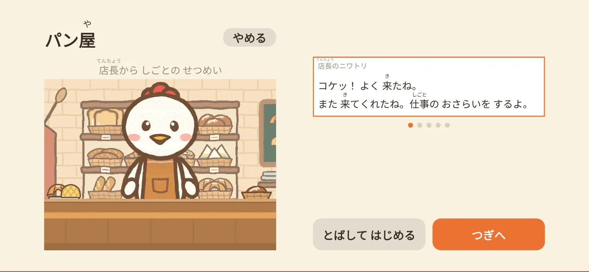
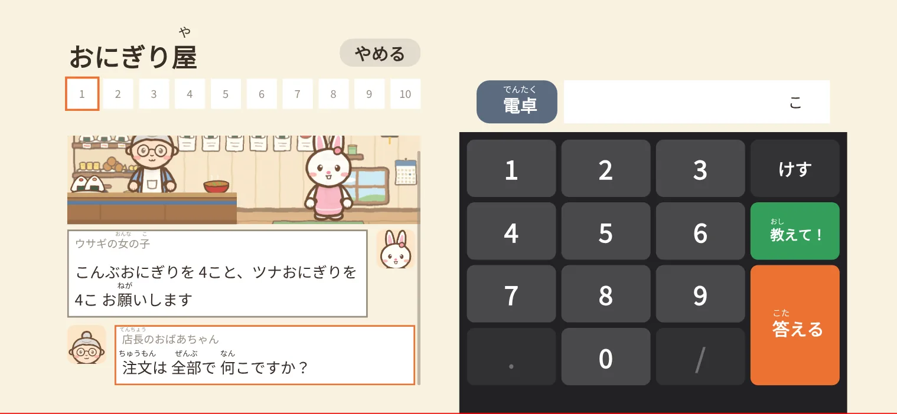
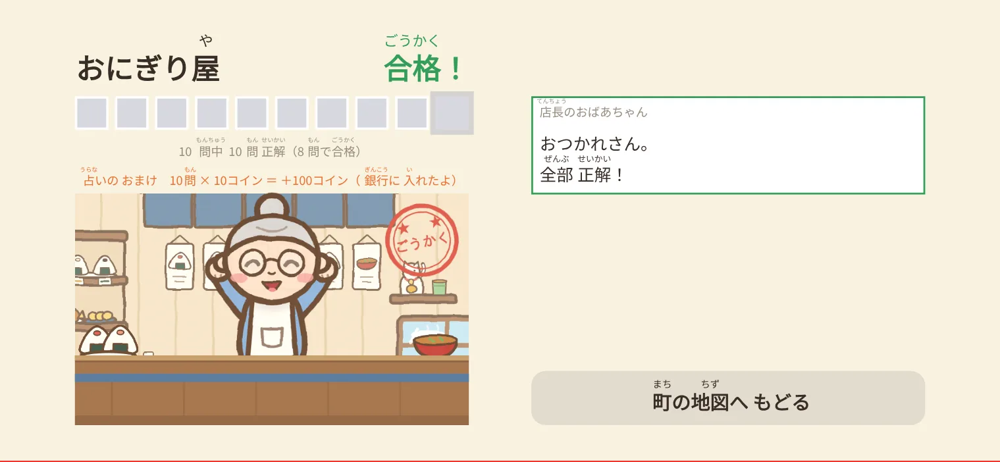
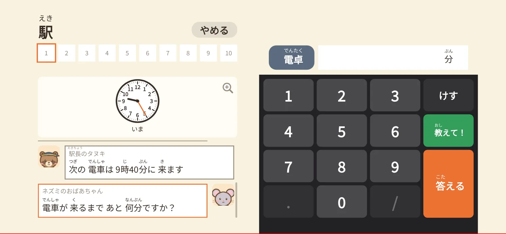
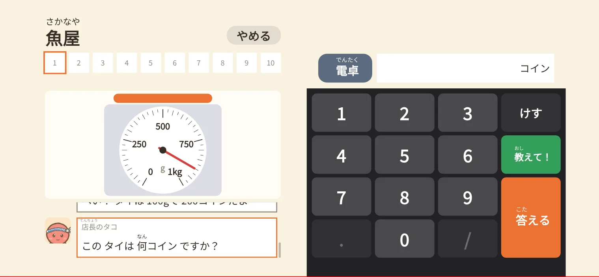
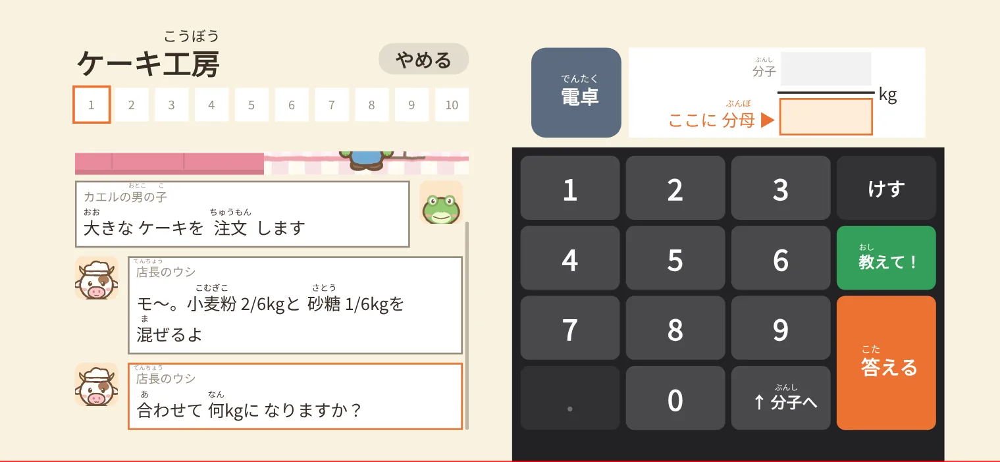

遊び方
1回のアルバイトは10問。数分で終わるので、すきま時間にも続けやすい長さです。
町の地図でお店をえらぶ
「ぼしゅう中」の看板が出ているお店に入ります。合格したお店では、★2・★3のむずかしい仕事にも挑戦できます。

店長から仕事の説明を聞く
動物の店長たちが、どんな仕事をするのかを声つきで教えてくれます。

お客さんの注文に答える
10問中8問正解で合格。わからないときは「教えて！」で、絵を使った説明が見られます。

バイト代で町を楽しむ
もらったコインで道具を買ったり、町をかざったり。合格すると次のお店がひらき、最後は空港へ。
学べる内容
お店がひとつ進むごとに、単元も少しずつ先へ。たし算から始まり、最後の空港ではそれまでの総まとめに挑戦します。
無料で遊べるお店 無料
- おにぎり屋たし算
- 倉庫ひき算
- 花屋かけ算（九九）
- パン屋わり算
完全版で遊べるお店 完全版
- 駅時こくと時間（時計を読む）
- 手芸屋長さ（メジャーを読む）
- 魚屋重さ（はかりを読む）
- 郵便局長さの合計と表の読み取り
- 文房具屋小数
- ケーキ工房分数
- スーパーお金の計算とおつり
- ガソリンスタンド小数のかけ算（電卓も使う）
- 配達センター速さ・時間・道のり
- 空港総まとめ（大きな数・分数など）



★1〜★3の3段階
同じお店でも、★が上がるごとに学年が進むように少しずつむずかしくなります。ひとつ下の★に合格すると、次の★がひらきます。
「教えて！」で考え方がわかる
かけ算は「同じ数のまとまり」、わり算は「同じ数ずつ分ける」など、絵を使って考え方を説明します。
まちがえた問題をおさらい
「がんばり記録」に最近まちがえた問題が残り、同じような問題をもう一度練習できます。
安心ポイント
お子さんがひとりで遊んでも安心できるように作っています。
広告なし
広告は一切表示しません。アプリから外部のウェブサイトを開くこともありません。
個人情報を集めません
名前やメールアドレス、利用状況などを開発者が集めることはありません。遊んだ記録は端末の中に保存されます。
買い切りで追加料金なし
月額料金やガチャはありません。お金がかかるのは「完全版」を一度買うときだけです。
勝手に買えないしくみ
購入には App Store の Face ID・Touch ID・パスワードが必要です。ファミリー共有の「承認と購入のリクエスト」にも対応しています。
ふりがなと声つき
問題やセリフの漢字にはふりがなが付き、キャラクターが声で読み上げます。まだ漢字が読めない子でも遊べます。
おうちの人も進み具合を見られる
「がんばり記録」で、合格したお店の数や単元ごとの正解数、最近まちがえた問題を確認できます。
料金
まずは無料で遊んでみて、気に入ったら完全版へ。
- おにぎり屋・倉庫・花屋・パン屋の4店
- たし算・ひき算・かけ算・わり算
- ★1〜★3、「教えて！」、がんばり記録
- 駅から空港までの10店が追加（全14店）
- 時計・長さ・重さ・小数・分数・速さなど
- エンディングまで遊べます
- ファミリー共有で家族の端末でも使えます
完全版のお店は、ひとつ前のお店に合格すると順番にひらきます。価格は日本の App Store のものです。
よくある質問
何歳から遊べますか？
最初のおにぎり屋のたし算は小学1年生から遊べます。お店が進むと分数や速さなど高学年の内容も出てくるので、小学1〜6年生が目安です。ふりがなと声があるので、低学年でもひとりで遊べます。
お金はかかりますか？
ダウンロードは無料です。おにぎり屋からパン屋までの4つのお店は無料で遊べます。駅から空港までの残り10店は、買い切りの「完全版」を一度買うと遊べます（お店は順番に合格すると開きます）。月額料金や広告はありません。
子どもがまちがって買ってしまいませんか？
購入するときは、App Store が Face ID・Touch ID・パスワードで確認します。ファミリー共有の「承認と購入のリクエスト」を使うと、保護者の承認なしには購入できません。
どの端末で遊べますか？
iPhone と iPad で遊べます。Apple シリコン搭載の Mac でも動きます。Android 版は準備中です。
インターネットにつながっていなくても遊べますか？
はい。日本語の声もアプリに入っているので、オフラインで遊べます。通信するのは、iCloud への記録のアップロード・ダウンロード、購入、Game Center、英語の声のダウンロードのときだけです。
機種変更やアプリの入れ直しで、購入はどうなりますか？
同じ Apple アカウントなら、町の地図の「がんばり記録」→「完全版について」にある「購入を復元」で取り戻せます。もう一度お金がかかることはありません。「完全版」はファミリー共有にも対応しているので、家族の端末でも使えます。
遊んだ記録は引き継げますか？
遊んだ記録は端末の中に保存しています。タイトル画面の右上の「iCloud」から、記録を iCloud にアップロードしておくと、別の端末やアプリの入れ直しのあとにダウンロードして続きから遊べます（同じ Apple アカウントで iCloud にサインインしている必要があります）。アップロードしていない記録は、アプリを削除すると消えます。
子どもの進み具合を見るには？
町の地図の「がんばり記録」で、合格したお店の数、単元ごとの正解の数、最近まちがえた問題を見られます。
トロフィー（Game Center）とは？
お店で合格したときなどにもらえる記念のトロフィーです。端末で Game Center にサインインしているときだけ記録されます。サインインしていなくても、ゲームはすべて遊べます。
英語でも遊べますか？
はい。端末の言語が日本語以外のときは英語で表示されます。タイトル画面の「言語 / Language」から切り替えることもできます。英語の声は、使うときにダウンロードします。
お問い合わせ
ご意見・不具合のご連絡は、下のメールアドレスまでお送りください。お使いの端末（iPhone・iPad・Mac）と、どの画面で何が起きたかを書いていただけると助かります。